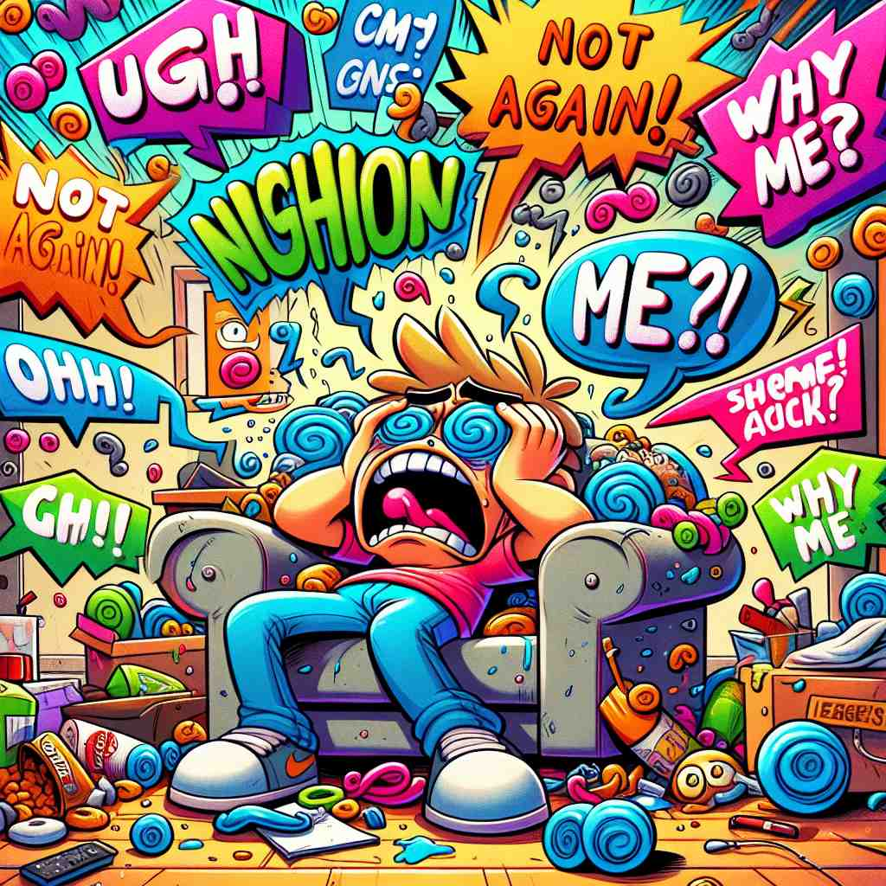

💬 He started to moan in pain after he slipped and fell. 他滑倒后开始痛苦地呻吟。

💬 The person seems to moan in pain due to their worries. 这个人似乎因担忧而呻吟着。

💬 The boy began to moan about the mess in the room. 那个男孩开始抱怨房间里的脏乱。
💬 He started to moan in pain after he slipped and fell. 他滑倒后开始痛苦地呻吟。
💬 The person seems to moan in pain due to their worries. 这个人似乎因担忧而呻吟着。
💬 The boy began to moan about the mess in the room. 那个男孩开始抱怨房间里的脏乱。
🧠 想象一个人发出低沉的呻吟声，这个声音既可以表达痛苦，也可以表达不满或抱怨。从这个核心含义出发，'moan'可以用来描述人或物发出类似的声音，也可以引申为抱怨的行为或内容。记住这个声音的特点和含义，就能轻松理解和记忆'moan'的各种用法。
🔈 [məʊn]
🗝️ v. to make a long, low sound expressing physical or emotional suffering 发出长而低沉的声音以表达身体或情感上的痛苦
🎭 在一个宁静的医务室里，一名病人正躺在病床上。他的脸上露出痛苦的表情，发出低沉的呻吟声，反映出他的身体或情感正在遭受煎熬。
💬 The injured man moaned in pain. 受伤的男人痛苦地呻吟。
🌳 ‘moan’ 源自古英语 ‘mān’，意为抱怨或呻吟。这个词没有明显的前缀或后缀，但其核心意义是表达痛苦或不满的声音。
💡 记忆 'moan' 时，可以联想为表达痛苦（‘moan’）的声音。你可以想象有人在痛苦或烦恼时发出的低沉声音，这样更容易记住其含义。
🗝️ v. to complain in a way that other people find annoying 以让其他人感到恼火的方式抱怨
🎭 在一个喧闹的办公室中，一位同事正在不断抱怨繁重的工作任务。其他同事对他的唠叨已经感到厌烦，一边继续工作，一边无奈地摇头。
💬 He's always moaning about how much work he has to do. 他总是抱怨他有多少工作要做。
🤔 从表达痛苦的声音延伸到表达不满
🗝️ v. to make a sound similar to a person moaning, often used for wind or trees 发出类似人呻吟的声音，常用于形容风或树木的声音。
🎭 在一个幽静的森林里，风轻轻穿过树梢，发出仿佛人在呻吟的低沉声响。树叶沙沙作响，与风声相互交织，增添了一种神秘的氛围。
💬 The wind moaned through the empty house. 风在空荡荡的房子里呜咽。
🤔 将人的呻吟声比喻用于描述自然界的声音
🗝️ n. a long, low sound expressing pain, suffering, or pleasure 一种低沉、悠长的声音，表达痛苦、折磨或愉悦。
🎭 在一个安静的瑜伽教室中，一名学员在完成拉伸动作后，发出一声长长的呻吟声，既表达了拉伸带来的轻微疼痛，又流露出彻底放松的舒适感。
💬 We heard moans coming from the next room. 我们听到隔壁房间传来的呻吟声。
🤔 由动词转化为名词，描述呻吟的声音
🗝️ n. a complaint 一项投诉
🎭 在家庭晚餐时间，孩子们开始对菜单发出不满的牢骚，抱怨今天的蔬菜不合他们的胃口。父母无奈地笑着尝试劝解。
💬 I'm tired of listening to your moans about the weather. 我厌倦了听你抱怨天气。
🤔 从表达痛苦的声音引申为抱怨的内容